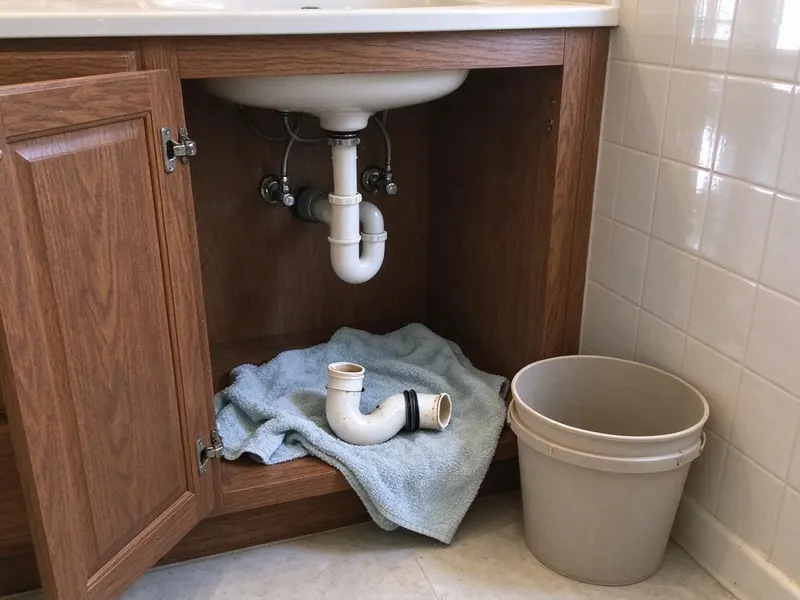

Foundation Leak Repair in Texarkana, TX
Protect your property from the hidden dangers of foundation leaks. DFJ Plumbing delivers expert foundation leak repair services throughout Texarkana, TX.
- Fast Leak Detection
- Expert Slab Repair
- Licensed & Insured
- Texas Plumbing Pros

Worried About a Foundation Leak in Texarkana, TX?
Don't wait for the damage to spread, call us now to schedule service.
Expert Foundation Leak Repair in Texarkana, TX
DFJ Plumbing specializes in detecting and repairing foundation leaks, also known as slab leaks, that threaten homes across Texas. Our team uses advanced tools and techniques to pinpoint the exact location of leaks beneath your concrete slab, preventing further damage to your property in Texarkana.
Our expertise includes:
- Pinpointing hidden leaks under concrete slabs.
- Repairing copper, PEX, and PVC lines effectively.
- Restoring water flow and structural integrity.

Additional Plumbing Repair Services in Texarkana, TX
We offer expert plumbing repair services across Texarkana, TX to stop leaks, clear blockages, and keep every fixture working the way it should.


Customers
Why Choose DFJ Plumbing for Foundation Leak Repair in Texarkana, TX?
Ignoring a foundation leak can lead to severe structural issues and mold growth in your home. Our team provides prompt and precise repairs, protecting your investment and peace of mind.
- Advanced Detection, We use acoustic leak detectors and thermal imaging to find hidden leaks without unnecessary destruction.
- Durable Repairs, Our repairs utilize high-quality materials and proven methods to ensure long-lasting results for your foundation.
- Licensed Plumbers, All our technicians are licensed and trained to meet strict Texas plumbing codes for your safety and assurance.
Citywide Coverage
No matter where your home is located in Texarkana, DFJ Plumbing provides comprehensive foundation leak repair services. We understand the local geography and infrastructure, allowing us to efficiently reach and serve all residents.
Experienced Team
Each DFJ Plumbing technician is a specialist in foundation leak repair, possessing the skills to accurately diagnose and fix even the most complex slab issues. Their expertise ensures a reliable and safe repair for your property.
Safety-First Approach
For every foundation leak repair, DFJ Plumbing prioritizes safety and compliance with all Texas plumbing standards. Our methods are designed to minimize disruption while ensuring the repair is robust and meets all regulatory requirements.
Trusted Certified Texarkana Plumbing Services Professionals
At DFJ Plumbing, we take pride in providing certified plumbing services throughout Texarkana, TX. Backed by recognized industry credentials, our experienced plumbers combine technical skill with genuine customer care. Whether it is repair, installation, or maintenance, we follow strict safety and quality standards to deliver lasting results you can trust.
Call Us Now PHCC Plumbing Contractor Recognition
PHCC Plumbing Contractor Recognition Better Business Bureau (BBB) Accreditation
Better Business Bureau (BBB) Accreditation Angi Certified Pro
Angi Certified Pro ISO 9001 Quality Management Certification
ISO 9001 Quality Management CertificationReliable Foundation Leak Repair Services in Texarkana, TX
Slab Leak Detection & Repair in Texarkana
Slab leaks are notorious for being difficult to detect, often showing subtle signs like warm spots on the floor or a sudden jump in your water bill. DFJ Plumbing employs state-of-the-art acoustic and infrared technology to precisely locate these hidden leaks under your concrete foundation. Once identified, we offer tailored repair solutions, whether it's a spot repair, re-routing, or pipe bursting, to restore your plumbing system in Texarkana without extensive damage to your property.

Copper Pipe Leak Repair in Texarkana, TX
Many older homes in Texarkana, TX have copper water lines beneath their foundations, which can corrode over time due to soil conditions or water chemistry. When these copper pipes develop pinhole leaks or cracks, they require specialized repair. Our technicians are experts at repairing or replacing sections of damaged copper piping, ensuring a durable seal that withstands the pressures and environmental factors common in Texas, preventing future leaks.
PEX and PVC Foundation Leak Repair in Texarkana
Modern homes often feature PEX or PVC plumbing, which, while durable, can still be susceptible to foundation leaks due to ground movement or improper installation. DFJ Plumbing has the tools and expertise to repair leaks in these plastic piping systems. We use specific fusion and solvent welding techniques to ensure strong, leak-proof connections, restoring the integrity of your plumbing system beneath your Texarkana foundation.
Tunneling for Foundation Leaks in Texarkana, TX
In some cases, the most effective way to repair a foundation leak is through tunneling beneath the slab. This method allows our plumbers to access the damaged pipe directly without breaking through your home's interior flooring. DFJ Plumbing is experienced in safe and efficient tunneling practices, minimizing disruption to your Texarkana, TX home and ensuring a comprehensive repair of the compromised pipe section.
Emergency Foundation Leak Service in Texarkana
A sudden, significant foundation leak can cause rapid and severe damage, requiring immediate attention. DFJ Plumbing offers emergency foundation leak repair services in Texarkana to address urgent situations. Our rapid response team is equipped to quickly assess the leak, isolate the damaged line, and implement a temporary or permanent repair to mitigate water damage and protect your home's structural integrity, even after hours.
Residential Foundation Leak Repair in Texarkana, TX
For homeowners in Texarkana, TX, a foundation leak is a major concern that can impact everything from utility bills to structural stability. DFJ Plumbing provides comprehensive residential foundation leak repair services designed to protect your home and investment. We focus on diagnosing the root cause of the leak, whether it's pipe corrosion, ground shifts, or installation defects, and providing a long-lasting solution tailored to your home's specific needs.
Commercial Foundation Leak Services in Texarkana
Businesses in Texarkana also face the risk of foundation leaks, which can disrupt operations and lead to costly property damage. DFJ Plumbing offers specialized commercial foundation leak repair services, understanding the need for minimal downtime and efficient solutions. Our team can work around your business hours to conduct leak detection and repairs, ensuring your commercial property's plumbing system is restored quickly and reliably.

Advanced Leak Detection Technology in Texarkana, TX
The ability to accurately locate a foundation leak is crucial for an effective repair. DFJ Plumbing invests in advanced leak detection technology, including high-frequency listening devices and specialized camera inspections, to pinpoint leaks with precision. This technology allows us to identify the exact location of the break in your pipes, whether it's a small pinhole or a significant burst, minimizing invasive searching and repair costs for our Texarkana, TX customers.
Foundation Leak Repair Near Me in Texarkana, TX
If you're searching for 'foundation leak repair near me' in Texarkana, TX, look no further than DFJ Plumbing. We are your local experts, deeply familiar with the plumbing systems and common issues found in homes across our community. Our proximity means faster response times and a team ready to tackle your leak with efficiency and expertise.
When a foundation leak strikes, you need a trusted local plumbing company that understands the unique Texas environment. DFJ Plumbing is dedicated to providing prompt, professional foundation leak repair services throughout Texarkana, TX. We're just a call away, ready to restore the safety and integrity of your home.
DFJ Plumbing at a Glance
- Licensed and insured plumbers serving Texarkana, TX
- 24/7 emergency service with same-day scheduling
- Upfront, flat-rate pricing before work begins
- 4.9-star rated by 812+ Texas customers
Texarkana Map
Texarkana Information
- Population
- 35,741
- Area codes
- 903/870/430
- Service area
- Texarkana and communities within 40 miles
- Nearby
- Longview, Tyler, Rockwall, Wylie
Given the expansive clay soils and variable climate in Texarkana, TX, foundation leaks are a significant concern that can lead to severe structural damage if not addressed promptly.
Expert Services
Trust our professionals for reliable DFJ Plumbing solutions in Texarkana, TX.
Our Specialized Plumbing Services in Texarkana, TX
At DFJ Plumbing, we provide a complete range of plumbing services across Texarkana, TX. From leak detection to full system installations, our team ensures fast, precise, and affordable service for both residential and commercial properties. Explore our core services below:


How Our Foundation Leak Repair Process Works in Texarkana, TX
Our foundation leak repair process is designed for maximum efficiency and minimal disruption to your Texarkana, TX home.
Request a Quote
Call (737) 405-5978 or fill out our online form to schedule an initial inspection. We'll discuss your concerns and set up a convenient time for our team to visit your Texarkana property.
Leak Detection
Our skilled technicians use advanced equipment like acoustic detectors and thermal cameras to accurately locate the foundation leak without destructive methods. This precision saves you time and money on unnecessary repairs.
Expert Repair
Once the leak is pinpointed, we discuss the best repair options, whether it's a direct repair, re-routing, or pipe bursting. We then execute the repair using high-quality materials and techniques that comply with all local Texarkana, TX plumbing codes.
Frequently Asked Questions About Foundation Leak Repair in Texarkana
The cost of foundation leak repair in Texarkana, TX can vary significantly based on the leak's location, severity, and the repair method required. Minor spot repairs might range from $800 to $2,500, while more complex re-routing or tunneling could be $3,000 to $8,000 or more. We provide a detailed estimate after a thorough inspection.
Our technicians are experienced in repairing and replacing all common types of residential plumbing pipes found in Texarkana, including copper, PEX (e.g., Uponor, Viega), and PVC. We use high-quality, code-compliant materials for all repairs to ensure durability and longevity.
The duration of foundation leak repair depends on the complexity of the leak and the chosen repair method. A simple spot repair might take a few hours, while more involved processes like tunneling or re-routing could take one to three days. Our team aims for efficient service to minimize disruption to your Texarkana home.
Foundation leak repair is a complex task best left to licensed professionals. It requires specialized detection equipment, knowledge of plumbing codes, and expertise in working with various pipe materials under concrete. Attempting DIY repair can lead to further damage, higher costs, and potential safety hazards in your Texarkana home.
Common signs include unexplained increases in your water bill, warm spots on the floor, the sound of running water when no fixtures are in use, visible cracks in the foundation or walls, and sudden drops in water pressure. Musty odors or visible moisture around the foundation in Texarkana are also red flags.
Many homeowner's insurance policies may cover the cost of repairing sudden and accidental foundation leaks, particularly the damage caused by the leak, rather than the pipe repair itself. However, coverage varies, so it's best to check with your specific insurance provider in Texarkana, TX.
In most cases, significant plumbing repairs involving your foundation in Texarkana, TX will require a permit to ensure the work meets local building codes and safety standards. DFJ Plumbing handles all necessary permitting processes on your behalf, ensuring your repair is compliant and approved.
DFJ Plumbing stands behind the quality of our work. We offer a comprehensive warranty on all foundation leak repairs, covering both parts and labor. Specific warranty details will be provided with your estimate, giving you peace of mind for your Texarkana home.
What People Are Saying About Our Plumbing Experts?

Robert G.
The trenchless sewer replacement saved our front yard. They walked us through the camera inspection footage first so we knew exactly what we were paying for.
Sewer Line Replacement · Rockwall, TX
Patricia H.
We had a slab leak that two other companies could not find. DFJ Plumbing located it in under an hour, explained our options, and the price matched the quote to the dollar.
Slab Leak Repair · Rowlett, TX
Sofia M.
Two new toilets installed in one visit, no mess left behind, and the tech even adjusted a faucet he noticed was dripping. Fair pricing and really friendly.
Toilet Installation · Rowlett, TXLaura S.
I scheduled a water heater replacement, and the team made the process smooth and affordable. The new unit works perfectly, and they cleaned up after completing the job.
Water Heater Replacement · Rockwall, TXJames P.
Our commercial plumbing system had a leak under the sink, and DFJ Plumbing handled it professionally. The plumbers arrived quickly and restored everything without disruption to our customers.
Commercial Plumbing · Tyler, TX
Emily R.
I called DFJ Plumbing for plumbing repair, and the technician was fast, polite, and thorough. They explained the problem clearly and fixed it the same day. I will definitely hire them again. Highly recommended!
Plumbing Repair · Tyler, TX